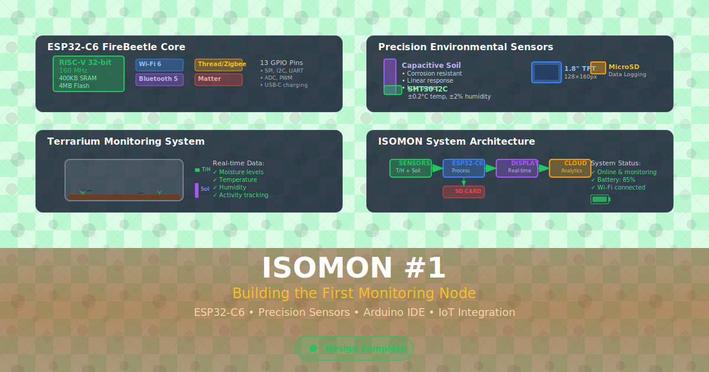
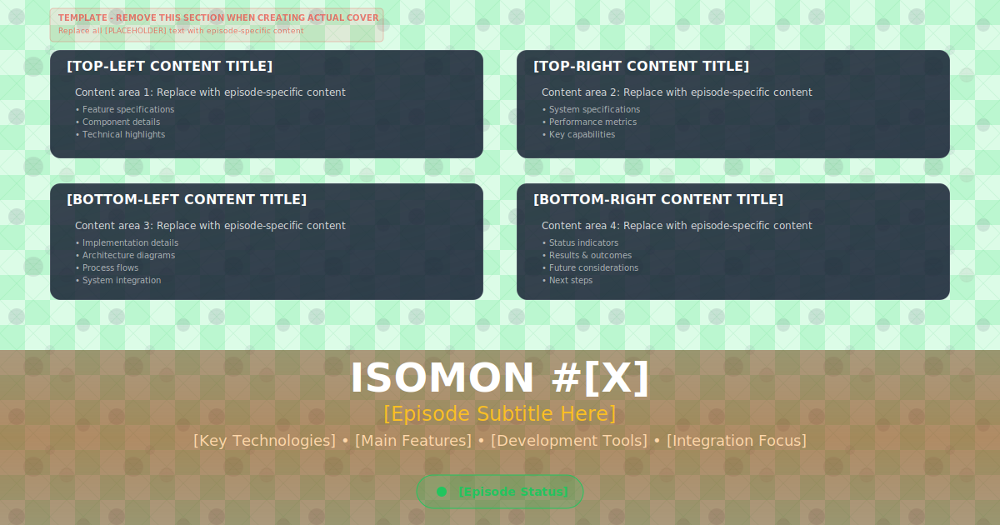

ISOMON #1: Building the First Monitoring Node

Updated Design Features:
✅ Detailed Isopod Pattern Background - Replaced town with 5 different conglobated isopod species
✅ Species Diversity - Armadillidium vulgare, Trachelipus rathkii, Armadillidium nasatum, Oniscus asellus, juvenile isopod
✅ Authentic Segmentation - Each species shows proper conglobated (rolled up) form with curved segment lines
✅ Vichy Pattern Preserved - Green checkered base pattern maintained
✅ Clean Quadrant Layout - ESP32-C6, sensors, terrarium, system architecture
✅ Professional Title Area - Proper spacing and typography
✅ XML Validation Fixed - All special characters properly escaped (#, •, ✓, &)
Content Layout:
• Top-Left (520x130): ESP32-C6 FireBeetle Core specifications
• Top-Right (520x130): Precision environmental sensors
• Bottom-Left (520x140): Terrarium monitoring system
• Bottom-Right (520x140): System architecture & status
• Status: Design Complete
ISOMON Cover Template (Updated)

Template Updates:
✅ Isopod Pattern Integration - Same detailed pattern as ISOMON #1
✅ Town Elements Removed - Clean background with only vichy + diagonal + isopod patterns
✅ Placeholder Content - Ready for future ISOMON episodes
✅ Consistent Styling - Matches the series aesthetic
✅ XML Validation Fixed - All special characters properly escaped
Template Features:
• All quadrants with placeholder content
• Customizable title and subtitle areas
• Status indicator template
• Usage instructions (removable)